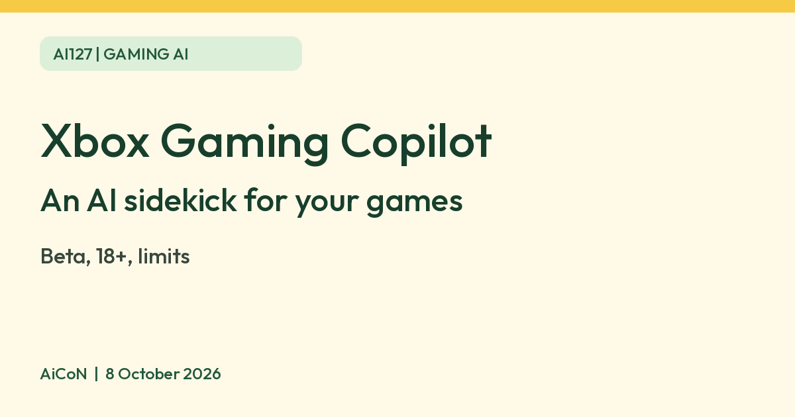

Xbox Gaming Copilot (Beta): ask for game tips from the Xbox app
Gaming Copilot (Beta) is Xbox's AI sidekick. Xbox says you can ask it for game tips, achievement help and recommendations by voice or text, including from the Xbox mobile app. Xbox lists it for players aged 18 and older and still labels it Beta.

What it is
Gaming Copilot (Beta) is Xbox's AI-powered gaming sidekick. Xbox's own pages describe it as a personal helper for recommendations, help and insights. On the Xbox on mobile page it still carries the Beta label.
What Xbox says you can ask
- Questions about a game you are playing or want to try, such as tips when you are stuck.
- Game recommendations based on your favourite genres or play history.
- Questions about your Xbox account, such as achievements and play history.
- Xbox says Gaming Copilot knows what is happening in your game in real time and can respond to what is on your screen.
How to open it
- On a phone. Xbox's November 2025 update says it is available in the Xbox mobile app through the Gaming Copilot tab. Tap the microphone to talk, or type your message.
- On Windows PC. Xbox says to open Game Bar with the Windows key plus G, find the Gaming Copilot icon, and sign in to your Xbox account.
| Age | Xbox's September 2025 post says it rolls out to players aged 18 and older. |
|---|---|
| Regions | The same post says regional support is everywhere except mainland China. We did not verify India-specific availability or the language list. |
| Account | You need to log in to your Xbox account for the full experience, per Xbox. |
Limits to know
- It is a Beta, so features and answers can change. Xbox also asks players to mark wrong answers with thumbs up or down.
- AI game tips can be wrong or out of date, especially for new patches. Check against the game itself.
- Because it can look at what is on your screen, check Xbox's privacy settings and do not share it while private information is showing.
- Xbox's pages we read do not state a price, and we quote none. We did not test it ourselves.
Frequently asked questions
Do I need an Xbox console?
Xbox says you can use it from the Xbox mobile app or Game Bar on Windows PC. We did not verify what it needs beyond an Xbox account.
Is it free?
The pages we read do not mention a charge.
Is it finished?
No. Xbox still labels it Beta.
Sources: Xbox on mobile, Xbox Wire, 18 September 2025, Xbox Wire, 25 November 2025. Checked 8 October 2026.